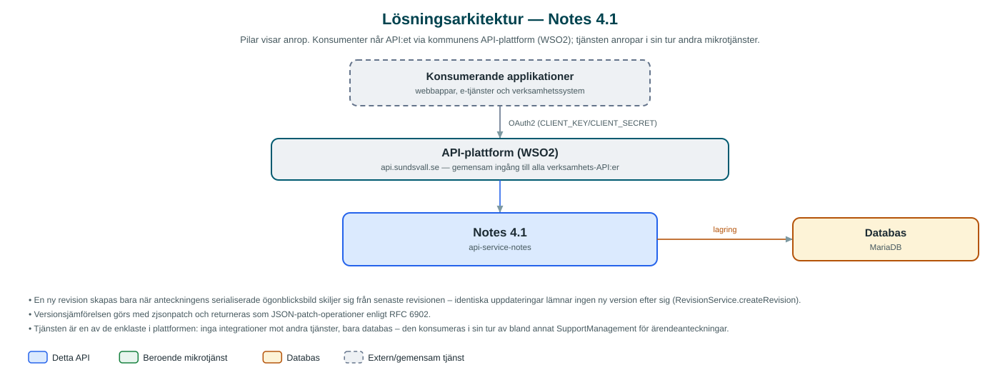

Notes
Gemensam anteckningstjänst som lagrar anteckningar kopplade till parter eller ärenden, med full revisionshistorik för varje ändring.
Om API:et
Notes är kommunens gemensamma lagring av anteckningar. I stället för att varje applikation bygger egen anteckningsfunktionalitet skapar de anteckningar här, knutna till en part (partyId), ett ärende (caseId), en applikation (clientId), ett sammanhang (context) och en roll. Bland annat använder SupportManagement tjänsten för sina ärendeanteckningar.
Anteckningar kan sökas fram med valfri kombination av dessa nycklar, med paginering. Varje gång en anteckning skapas eller ändras sparas en revision – men bara om innehållet faktiskt skiljer sig från den senaste revisionen, så historiken innehåller enbart verkliga ändringar.
Revisionerna kan listas per anteckning, och skillnaden mellan två valfria versioner kan hämtas som JSON-patch-operationer enligt RFC 6902 – användbart för att visa exakt vad som ändrats, när och av vem.
Det här gör API:et
- Anteckningar med koppling – Skapa, uppdatera, hämta och ta bort anteckningar knutna till part, ärende, applikation, sammanhang och roll.
- Flexibel sökning – Sök anteckningar på valfri kombination av partyId, caseId, clientId, context och roll, med paginering.
- Revisionshistorik – Varje verklig ändring sparas som en ny revision med versionsnummer – oförändrat innehåll skapar ingen ny revision.
- Skillnad mellan versioner – Skillnaden mellan två revisioner returneras som JSON-patch-operationer enligt RFC 6902.
API-dokumentation
API:ets samtliga resurser, parametrar och datamodeller finns beskrivna i en OpenAPI-specifikation som är hämtad ur källkodsförrådet. Den kan utforskas interaktivt i Swagger UI eller laddas ner som YAML. Programvaruförteckningen (SBOM) listar tjänstens samtliga tredjepartskomponenter med version och licens.
Teknisk dokumentation
Nedan beskrivs hur tjänsten är uppbyggd, vilka andra tjänster den anropar och vad som krävs för att driftsätta den. Informationen är härledd ur källkoden och dess konfiguration på GitHub.
Arkitektur

API:et är en mikrotjänst (Java 25, Spring Boot via kommunens gemensamma tjänsteplattform dept44 (8.0.8), byggd med Maven). Konsumenter når tjänsten via kommunens gemensamma API-plattform (WSO2) på api.sundsvall.se – tjänsten anropas aldrig direkt. Lagring: MariaDB med Flyway-migrationer; anteckningar och deras revisioner lagras per kommun.
Teknikstack
- Språk: Java 25
- Ramverk: Spring Boot via kommunens gemensamma tjänsteplattform dept44 (8.0.8), byggd med Maven
- Databas: MariaDB med Flyway-migrationer; anteckningar och deras revisioner lagras per kommun
- Övrigt: JSON-diff med zjsonpatch för revisionsjämförelser (RFC 6902)
Beroenden till andra mikrotjänster
Inga anrop till andra mikrotjänster hittades i källkodens konfiguration.
Programvaruförteckning
Tjänsten bygger på 272 tredjepartskomponenter fördelade på 14 olika licenser. Till skillnad från tabellen ovan, som listar andra mikrotjänster, avses här de programbibliotek som ingår i bygget. Se programvaruförteckningen för hela listan.
Konfiguration och driftsättning
- application.yml med MariaDB-anslutning; databasschemat versionshanteras med Flyway
- Inga beroenden till andra mikrotjänster – tjänsten är fristående
- Anrop görs per kommun – municipalityId ingår i alla API-vägar
Noterbart ur källkoden
- En ny revision skapas bara när anteckningens serialiserade ögonblicksbild skiljer sig från senaste revisionen – identiska uppdateringar lämnar ingen ny version efter sig (RevisionService.createRevision).
- Versionsjämförelsen görs med zjsonpatch och returneras som JSON-patch-operationer enligt RFC 6902.
- Tjänsten är en av de enklaste i plattformen: inga integrationer mot andra tjänster, bara databas – den konsumeras i sin tur av bland annat SupportManagement för ärendeanteckningar.
Källkod
Källkoden är öppen och finns hos Sundsvalls kommun på GitHub. I källkodsförrådet finns även instruktioner för att klona, konfigurera och starta tjänsten i egen miljö.